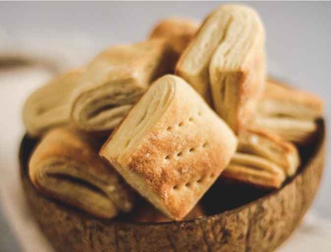
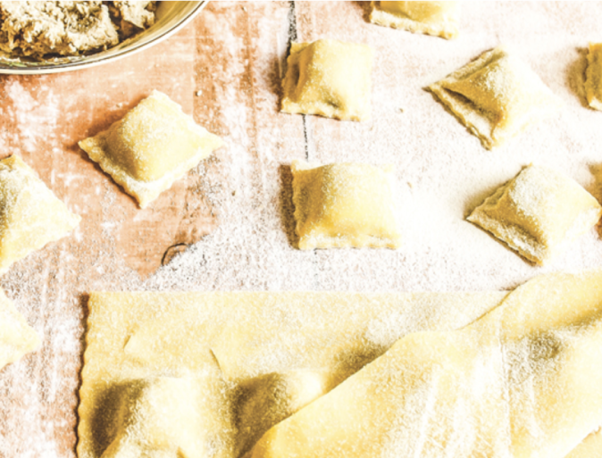
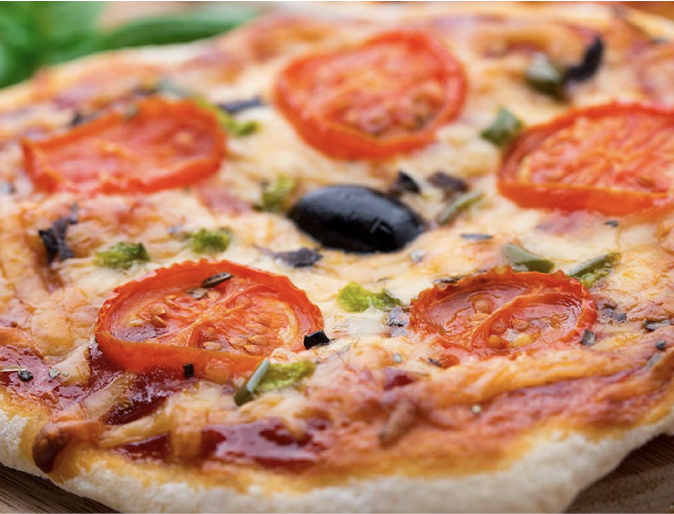
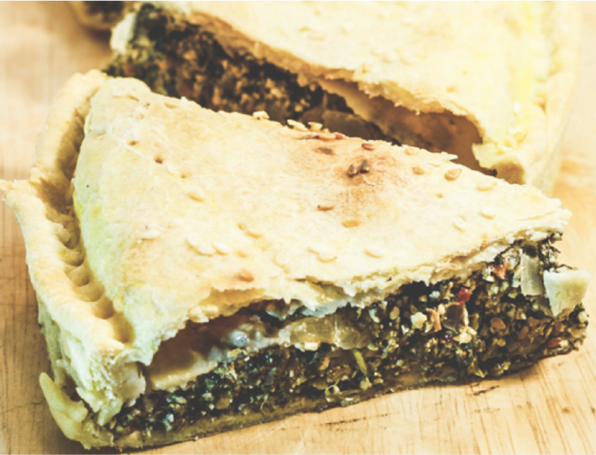

Recetas
Recetas con: Harina de trigo 0000.
- 
Criollitos
35'Ingredientes: levadura, agua, azucar, sal, margarina.
Dificultad: Fácil
- 
Ravioles veganos
55'Ingredientes: cúrcuma, aceite de oliva, semillas de girasol, sal.
Dificultad: Mediana
- 
Pizza italiana
65'Ingredientes: levadura, agua, sal, azucar, tomates, queso vegano.
Dificultad: Mediana
- 
Tarta de verduras
95'Ingredientes: leche de almendras, cebolla, albaca, queso de papa.
Dificultad: Mediana